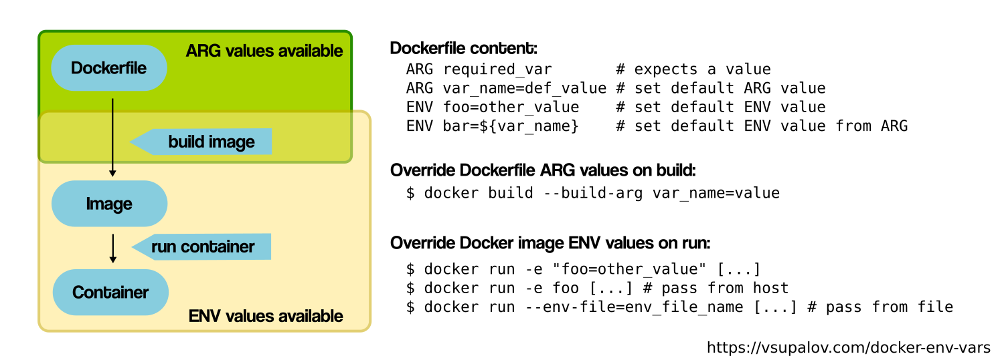

docker build secret 사용
개요
Docker build에서 secret 사용하기 가이드.
배경지식
Dockerfile ARG vs ENV

도커파일에서 ARG는 빌드할 때만 사용되며, ENV는 컨테이너 빌드와 컨테이너 실행 모두에 사용됩니다.
docker build 할 때 --build-arg 대신 --secret 옵션을 사용할 경우, docker history에 환경변수가 노출되지 않기 때문에 더 안전한 컨테이너 이미지를 만들 수 있습니다.
docker history 확인 예시는 다음과 같습니다.
$ docker history 6591676b438c --no-trunc | grep NEXT
IMAGE CREATED CREATED BY
<missing> 12 hours ago RUN |3 NEXT_PUBLIC_AWS_KMS_REGION=ap-northeast-2 NEXT_PUBLIC_AWS_KMS_DEV_KEY_ID=arn:aws:kms:ap-northeast-2:111122223333:key/059x1xx5-0x94-44x2-97x4-4x49x5xx2x23 NEXT_PUBLIC_AWS_KMS_AES_KEY_ID=arn:aws:kms:ap-northeast-2:111122223333:key/9x4943xx-9431-45b7-b415-4x175xxxxx8x /bin/sh -c secret_1="$(cat /run/secrets/NEXT_PUBLIC_AWS_KMS_ACCESS_KEY_ID)" secret_2="$(cat /run/secrets/NEXT_PUBLIC_AWS_KMS_SECRET_ACCESS_KEY)" NEXT_PUBLIC_AWS_KMS_ACCESS_KEY_ID=${secret_1} NEXT_PUBLIC_AWS_KMS_SECRET_ACCESS_KEY=${secret_2} NEXT_PUBLIC_AWS_KMS_REGION=$NEXT_PUBLIC_AWS_KMS_REGION NEXT_PUBLIC_AWS_KMS_DEV_KEY_ID=$NEXT_PUBLIC_AWS_KMS_DEV_KEY_ID NEXT_PUBLIC_AWS_KMS_AES_KEY_ID=$NEXT_PUBLIC_AWS_KMS_AES_KEY_ID yarn burger-pay:build # buildkit
Docker Secret 적용 사례
Docker Secret을 사용하면 아래와 같은 민감한 데이터를 안전하게 관리할 수 있습니다.
- 사용자 패스워드
- TLS 인증서
- API 키 또는 IAM User에서 발급한 Access Key
- SSH 키
- JDBC Connection과 같은 데이터베이스 접속 정보
- 일반 문자열 및 바이너리 (최대 500kb 크기)
Docker Secret 특성
- Docker Secret은 컨테이너의 메모리에 저장되어 있는 정보이기 때문에 컨테이너 내에서 지정된 경로에만 마운트가 가능합니다.
- 컨테이너에 마운트 된 시크릿 데이터는 컨테이너 내부에서
/run/secrets/<시크릿_파일_이름>경로를 통해 접근할 수 있습니다. - 도커에서 시크릿은 오직 파일 형태로만 컨테이너에 마운트할 수 있습니다.
설정방법
Dockerfile
RUN --mount=type=secret,id=NEXT_PUBLIC_AWS_KMS_ACCESS_KEY_ID \
--mount=type=secret,id=NEXT_PUBLIC_AWS_KMS_SECRET_ACCESS_KEY \
secret_1="$(cat /run/secrets/NEXT_PUBLIC_AWS_KMS_ACCESS_KEY_ID)" \
secret_2="$(cat /run/secrets/NEXT_PUBLIC_AWS_KMS_SECRET_ACCESS_KEY)" \
NEXT_PUBLIC_AWS_KMS_ACCESS_KEY_ID=${secret_1} \
NEXT_PUBLIC_AWS_KMS_SECRET_ACCESS_KEY=${secret_2} \
NEXT_PUBLIC_AWS_KMS_REGION=$NEXT_PUBLIC_AWS_KMS_REGION \
NEXT_PUBLIC_AWS_KMS_DEV_KEY_ID=$NEXT_PUBLIC_AWS_KMS_DEV_KEY_ID \
NEXT_PUBLIC_AWS_KMS_AES_KEY_ID=$NEXT_PUBLIC_AWS_KMS_AES_KEY_ID \
yarn burger-pay:build
- 컨테이너 내부 경로
/run/secrets/<SECRET_ID>시크릿 파일을 생성 - 시크릿 파일을 환경변수 형태로 읽어들임
- 이제
docker build하는 타이밍에 환경변수를 주입하면 됩니다.
docker build
docker 명령어로 빌드 시 secret 주입하기 위해 먼저 buildkit을 활성화해야 합니다.
export DOCKER_BUILDKIT=1
BuildKit은 레거시 빌더를 대체하는 개선된 백엔드입니다. 빌드의 성능과 Dockerfile의 재사용성을 개선하기 위한 향상된 새 기능이 함께 제공됩니다.
BuildKit을 활성화한 상태로 도커 이미지를 빌드합니다.
docker build \
--secret id=NEXT_PUBLIC_AWS_KMS_ACCESS_KEY_ID,env=NEXT_PUBLIC_AWS_KMS_ACCESS_KEY_ID \
--secret id=NEXT_PUBLIC_AWS_KMS_SECRET_ACCESS_KEY,env=NEXT_PUBLIC_AWS_KMS_SECRET_ACCESS_KEY \
--build-arg NEXT_PUBLIC_AWS_KMS_REGION=$NEXT_PUBLIC_AWS_KMS_REGION \
--build-arg NEXT_PUBLIC_AWS_KMS_DEV_KEY_ID=$NEXT_PUBLIC_AWS_KMS_DEV_KEY_ID \
--build-arg NEXT_PUBLIC_AWS_KMS_AES_KEY_ID=$NEXT_PUBLIC_AWS_KMS_AES_KEY_ID .
참고자료
A Better Way to Handle Build-Time Secrets in Docker
Docker 빌드할 때 secret을 처리하는 더 나은 방법. 이 글이 문제 해결에 많은 도움이 되었습니다.
Understanding Docker Build Args, Environment Variables and Docker Compose Variables
Can you pass multiple Docker BuildKit secrets at once?
Don’t leak your Docker image’s build secrets
How to use Docker build secrets